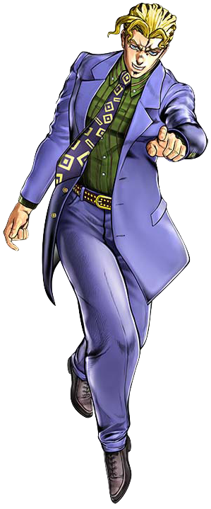

Jojo's Bizarre Adventure is the best anime ever

Jojo's Bizarre Adventure is exactly as the name says with the main characters all being related by the joestar family and where an adventure that starts with 2 english brothers fighting and one turning into a vampire turned into weird people fighting other weird people with psychic ghosts with cool abilities
those ghosts are called stands and have bizarre names based on music references such as 'Dirty Deeds Done Dirt Cheap' or D4C which is also a AC/DC song
reasons why Jojo's Bizarre adventure is the best anime:
- writing
- character designs
- action
- comedy
- emotional moments
- overall entertaining like no other

